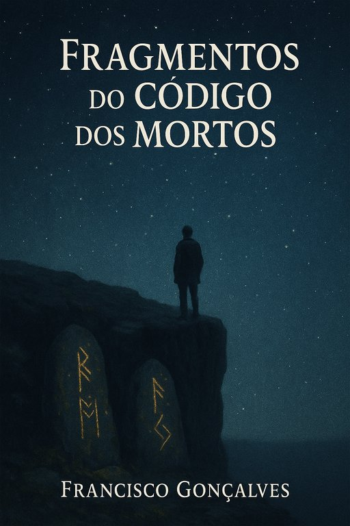

Publicado em 2025-05-28 16:06:06
Sempre me perguntei porque somos o que somos. E talvez Punset tenha tocado no nervo certo quando falou da nossa maquinaria biológica. Fomos programados, sim — mas não para mudar. Fomos programados para sobreviver.
A mudança assusta. A segurança atrai. O cérebro, esse velho artesão da adaptação, prefere o caminho gasto à vereda nova. Desde os tempos em que nos reuníamos à volta do fogo, o medo do desconhecido era acalmado com histórias, com crenças, com mitos reconfortantes. E esses mitos ficaram. Foram passados como herança genética. Estão gravados no nosso ADN com letras de fogo, mais fortes que a razão, mais antigos que a lógica.
Não fomos moldados para questionar. Fomos treinados para repetir. Para seguir o modelo dos que vieram antes — os pais, os avós, os bisavós. Todos a correrem pela vida dentro agarrados à ideia de que segurança é sinónimo de sentido. E o mais curioso é que, no fundo, tudo isso se mantém. Continuamos, em pleno século XXI, a obedecer a um código invisível. Um código feito não por nós, mas por aqueles que já cá não estão. Um código dos mortos.
E este código não é apenas uma metáfora. É real. Está presente quando escolhemos uma profissão que não amamos porque “dá segurança”. Está presente quando aceitamos uma vida que não nos desafia porque “é assim que sempre se fez”. Está presente quando calamos a dúvida porque a voz da tradição grita mais alto. Está em cada gesto automático, em cada decisão sem reflexão, em cada medo herdado.
A maior parte das nossas escolhas, se formos honestos, são ecos — não gritos próprios. Repetimos o passado e chamamos-lhe prudência. Ouvimos as vozes antigas dentro da cabeça e convencemo-nos de que somos nós a decidir. Mas não somos. Somos o produto de um código que corre sem nos pedir licença. Um script que alguém escreveu há milhares de anos, e que nós apenas continuamos a executar.
Mas talvez… talvez possamos interromper essa execução. Talvez possamos olhar para dentro e perceber que há mais — que há espaço para a dúvida, para o rasgo, para a criação de algo novo. Talvez o verdadeiro salto evolutivo não seja tecnológico, nem biológico — seja mental. Um salto em que deixamos de ser executores do código dos mortos e começamos a ser autores do nosso próprio caminho.
Não é fácil. Vai contra tudo o que nos ensinaram. Mas talvez — só talvez — valha a pena tentar.
Artigo de Francisco Gonçalves in Fragmentos de Caos